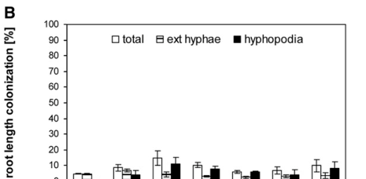

OsCCaMK / OsDMI3 (Q6AVM3; Os05g0489900, LOC_Os05g41090) is the rice ortholog of the legume common-symbiosis-pathway kinase DMI3/CCaMK, a calcium- and calcium/calmodulin-dependent serine/threonine protein kinase (EC 2.7.11.17). It has an N-terminal protein-kinase domain, a calmodulin-binding/autoinhibitory region, and three C-terminal EF-hand Ca2+-binding motifs that let it act as an intracellular decoder of nuclear Ca2+ spiking in the Common Symbiosis Signaling Pathway. In rice, the demonstrated symbiotic role of OsCCaMK is in arbuscular mycorrhizal symbiosis; rice is a non-nodulating cereal and does not form nitrogen-fixing root nodules with rhizobia. OsCCaMK can restore both mycorrhization and rhizobial nodulation when expressed heterologously in legume dmi3/ccamk mutants, but rice itself has no nodulation program for the kinase to act in. OsDMI3 also has a separable abiotic-stress role in ABA signaling upstream of OsMPK1 and OsRBOHB during water-deprivation stress, and localizes to the nucleus, cytoplasm, and plasma membrane.
| GO Term | Evidence | Action | Reason |
|---|---|---|---|
|
GO:0009877
nodulation
|
IEA
GO_REF:0000043 |
MODIFY |
Summary: SPKW (GO_REF:0000043) annotation derived from the UniProt keyword "Nodulation"; snapshot-only, removed in the current GOA release. "Nodulation" (formation of nitrogen-fixing root nodules in symbiosis with rhizobia) is a process that rice - a cereal in the Poaceae - does NOT perform. The keyword is inherited from CCaMK/DMI3 orthologs in legumes, where the same kinase decodes Ca2+ spiking for BOTH nodulation and mycorrhization. In rice the kinase's genuine symbiotic role is arbuscular mycorrhizal (AM) symbiosis, not nodulation.
Reason: Removal of the bare "nodulation" term is JUSTIFIED for rice, but the underlying symbiotic biology should be retained, not lost - so the correct curation is to MODIFY to a process rice actually performs. Rice is non-nodulating; the kinase decodes nuclear Ca2+ spiking in the common symbiosis pathway and, in rice, is genetically required for ARBUSCULAR MYCORRHIZAL symbiosis (Osccamk mutants are Myc-defective) [file:ORYSJ/CCAMK/CCAMK-deep-research-falcon.md]. The "Nodulation" keyword reflects the conserved CCaMK family signature in legumes (rice OsCCaMK can even restore nodulation when transferred into a legume dmi3 mutant), but applying "nodulation" to the rice gene is a pathway/organism-context error directly analogous to the PPC16 photosynthesis- keyword case in this subproject: a family-signature keyword applied to a species that does not carry out the process. The annotation should be MODIFIED to "arbuscular mycorrhizal association" (GO:0036377), which the rice gene genuinely supports.
Proposed replacements:
arbuscular mycorrhizal association
Supporting Evidence:
PMID:17965173
We demonstrate that OsDMI3 is not only required
for AM symbiosis in rice but also is able to complement a M. truncatula dmi3
mutant
file:ORYSJ/CCAMK/CCAMK-deep-research-falcon.md
Loss of rice CCAMK strongly impairs **arbuscular mycorrhizal colonization**, with fungal entry defects and failure of proper cortical colonization
|
|
GO:0035556
intracellular signal transduction
|
IBA
GO_REF:0000033 |
ACCEPT |
Summary: IBA annotation propagated across the CaMK Ser/Thr kinase phylogenetic group. CCaMK is an intracellular Ca2+/CaM-dependent kinase that transduces calcium signals to downstream effectors (CYCLOPS in symbiosis; OsMPK1/OsRBOHB in ABA-ROS signaling).
Reason: Correct and at an appropriate (if general) level of specificity. OsCCaMK is the intracellular decoder of nuclear Ca2+ spiking, converting a calcium signature into downstream transcriptional/enzymatic outputs [file:ORYSJ/CCAMK/CCAMK-deep-research-falcon.md]. It also transduces ABA/H2O2 signals via OsMPK1 [PMID:22869603]. "Intracellular signal transduction" is a generic but accurate parent term; more specific symbiotic-signaling processes are captured by the AM-association term (GO:0036377) below.
Supporting Evidence:
file:ORYSJ/CCAMK/CCAMK-deep-research-falcon.md
decodes intracellular/nuclear calcium signatures and couples them to transcriptional programs and stress signaling outputs
|
|
GO:0004672
protein kinase activity
|
IEA
GO_REF:0000002 |
ACCEPT |
Summary: IEA annotation from InterPro (IPR000719 protein kinase domain; IPR008271 Ser/Thr kinase active site). OsCCaMK has a bona fide N-terminal protein-kinase domain and is an active Ser/Thr kinase.
Reason: Correct but a broad parent term. OsCCaMK/OsDMI3 is an active serine/threonine protein kinase (EC 2.7.11.17) whose kinase domain (residues 13-298) and ATP-binding/active-site residues are annotated in UniProt, and rice OsDMI3 kinase activity has been assayed directly [file:ORYSJ/CCAMK/CCAMK-deep-research-falcon.md]. The more informative, specific MF (calcium/calmodulin-dependent protein kinase activity, GO:0004683) is also annotated; the generic parent is not wrong and can be accepted.
Supporting Evidence:
file:ORYSJ/CCAMK/CCAMK-deep-research-falcon.md
OsDMI3 was immunoprecipitated and assayed using **myelin basic protein (MBP)** as an in vitro substrate, confirming enzymatic activity consistent with a Ser/Thr protein kinase
|
|
GO:0004683
calcium/calmodulin-dependent protein kinase activity
|
IEA
GO_REF:0000003 |
ACCEPT |
Summary: IEA annotation from EC mapping (EC 2.7.11.17). This is the core, specific molecular function of OsCCaMK/OsDMI3: a Ca2+/calmodulin-dependent serine/threonine protein kinase.
Reason: This is the accurate, specific molecular function and is also independently supported by IBA (GO_Central) and by the protein name itself ("Calcium and calcium/calmodulin- dependent serine/threonine-protein kinase"). Rice OsDMI3 kinase activity was measured by in-gel kinase assay using MBP as substrate in the presence of Ca2+ and calmodulin [file:ORYSJ/CCAMK/CCAMK-deep-research-falcon.md]. This is a core function annotation.
Supporting Evidence:
file:ORYSJ/CCAMK/CCAMK-deep-research-falcon.md
OsDMI3 was immunoprecipitated and assayed using **myelin basic protein (MBP)** as an in vitro substrate, confirming enzymatic activity consistent with a Ser/Thr protein kinase
file:ORYSJ/CCAMK/CCAMK-deep-research-falcon.md
The kinase reaction mixture included **0.5 mM CaCl2** and **2 mM calmodulin**
|
|
GO:0005509
calcium ion binding
|
IEA
GO_REF:0000002 |
ACCEPT |
Summary: IEA annotation from InterPro (IPR002048 EF-hand domain). OsCCaMK has three C-terminal EF-hand Ca2+-binding motifs that bind calcium and underlie its Ca2+-sensing function.
Reason: Correct and core. UniProt annotates three EF-hand domains (residues ~392-505) with numerous Ca2+-coordinating BINDING residues, and CCaMK/DMI3 proteins are described as having C-terminal EF-hand Ca2+-binding motifs that enable regulation by Ca2+ signatures [file:ORYSJ/CCAMK/CCAMK-deep-research-falcon.md]. Calcium binding via the EF-hands is mechanistically central to the kinase's role as a Ca2+ decoder.
Supporting Evidence:
file:ORYSJ/CCAMK/CCAMK-deep-research-falcon.md
an N-terminal **kinase domain**, a **CaM-binding/autoinhibitory region**, and a C-terminal **EF-hand Ca2+-binding region**
|
|
GO:0005524
ATP binding
|
IEA
GO_REF:0000002 |
ACCEPT |
Summary: IEA annotation from InterPro (IPR000719 protein kinase domain; IPR017441 protein kinase ATP-binding site). As a protein kinase, OsCCaMK binds ATP as the phosphate donor.
Reason: Correct. UniProt annotates an ATP-binding region (residues 19-27) and an ATP-binding residue (43) in the kinase domain, consistent with the kinase mechanism (transfer of phosphate from ATP to protein Ser/Thr residues) [file:ORYSJ/CCAMK/CCAMK-deep-research-falcon.md]. ATP binding is an obligatory cofactor-binding function for the kinase activity.
Supporting Evidence:
file:ORYSJ/CCAMK/CCAMK-uniprot.txt
BINDING 19..27
FT /ligand="ATP"
|
|
GO:0005634
nucleus
|
IEA
GO_REF:0000044 |
ACCEPT |
Summary: IEA annotation (UniProtKB Subcellular Location keyword mapping, SL-0191). Nuclear localization is directly confirmed in rice by experimental subcellular-localization analysis and is mechanistically essential for the symbiotic Ca2+-spiking decode.
Reason: Strongly supported and a core localization. OsDMI3 was experimentally localized to the nucleus (alongside cytoplasm and plasma membrane) [PMID:22869603], and nuclear localization of active CCaMK is required to activate symbiotic responses (the nuclear Ca2+ spiking it decodes is nuclear/perinuclear) [file:ORYSJ/CCAMK/CCAMK-deep-research-falcon.md]. Duplicates the EXP nucleus annotation.
Supporting Evidence:
PMID:22869603
OsDMI3 is located in the nucleus,
the cytoplasm, and the plasma membrane
file:ORYSJ/CCAMK/CCAMK-deep-research-falcon.md
CCaMK is consistently framed as a **nuclear calcium-spiking decoder** in CSSP models, acting with the transcription factor CYCLOPS
|
|
GO:0005737
cytoplasm
|
IEA
GO_REF:0000044 |
ACCEPT |
Summary: IEA annotation (UniProtKB Subcellular Location keyword mapping, SL-0086). Cytoplasmic localization is confirmed in rice experimentally.
Reason: Supported by direct rice evidence: OsDMI3 was localized to the nucleus, the cytoplasm and the plasma membrane [PMID:22869603]. Duplicates the EXP cytoplasm annotation. The cytoplasmic pool is consistent with its role in ABA/ROS stress signaling in addition to the nuclear symbiotic-signaling role.
Supporting Evidence:
PMID:22869603
OsDMI3 is located in the nucleus,
the cytoplasm, and the plasma membrane
|
|
GO:0005886
plasma membrane
|
IEA
GO_REF:0000044 |
ACCEPT |
Summary: IEA annotation (UniProtKB Subcellular Location keyword mapping, SL-0039; peripheral membrane protein by ECO:0000305). Plasma-membrane association is reported in rice.
Reason: Supported by direct rice evidence: OsDMI3 was localized to the nucleus, the cytoplasm and the plasma membrane [PMID:22869603]; UniProt classifies it as a peripheral membrane protein at the cell membrane. Duplicates the EXP plasma membrane annotation. The peripheral plasma-membrane pool may relate to proximity to ABA/ROS signaling components (e.g. the membrane NADPH oxidase OsRBOHB).
Supporting Evidence:
PMID:22869603
OsDMI3 is located in the nucleus,
the cytoplasm, and the plasma membrane
|
|
GO:0106310
protein serine kinase activity
|
IEA
GO_REF:0000116 |
ACCEPT |
Summary: IEA annotation from RHEA (RHEA:17989) via the EC 2.7.11.17 catalytic activity. Captures the serine-directed component of the kinase's protein-phosphorylation activity.
Reason: Correct. The UniProt CATALYTIC ACTIVITY block records phosphorylation of both L-seryl-[protein] (RHEA:17989) and L-threonyl-[protein] (RHEA:46608) under EC 2.7.11.17, and OsDMI3 is an active Ser/Thr kinase assayed on MBP substrate [file:ORYSJ/CCAMK/CCAMK-deep-research-falcon.md]. This Rhea-derived MF is consistent with the more general protein-kinase and the specific Ca2+/CaM-dependent kinase MFs.
Supporting Evidence:
file:ORYSJ/CCAMK/CCAMK-uniprot.txt
Serine/threonine-protein kinase
|
|
GO:0005634
nucleus
|
EXP
PMID:22869603 OsDMI3 is a novel component of abscisic acid signaling in th... |
ACCEPT |
Summary: EXP annotation citing PMID:22869603, the rice study that experimentally determined OsDMI3 subcellular localization. Directly supports nuclear localization.
Reason: Directly supported by the cited experiment. Subcellular localization analysis in PMID:22869603 showed that OsDMI3 is located in the nucleus (as well as the cytoplasm and plasma membrane). Nuclear localization is the functionally critical compartment for decoding the nuclear Ca2+ spiking signal. Core localization.
Supporting Evidence:
PMID:22869603
OsDMI3 is located in the nucleus,
the cytoplasm, and the plasma membrane
|
|
GO:0005737
cytoplasm
|
EXP
PMID:22869603 OsDMI3 is a novel component of abscisic acid signaling in th... |
ACCEPT |
Summary: EXP annotation citing PMID:22869603. Directly supports cytoplasmic localization of OsDMI3 by experimental subcellular-localization analysis.
Reason: Directly supported. The localization analysis in PMID:22869603 placed OsDMI3 in the cytoplasm in addition to the nucleus and plasma membrane. The cytoplasmic pool is consistent with the kinase's role in cytoplasmic ABA/H2O2 stress signaling.
Supporting Evidence:
PMID:22869603
OsDMI3 is located in the nucleus,
the cytoplasm, and the plasma membrane
|
|
GO:0005886
plasma membrane
|
EXP
PMID:22869603 OsDMI3 is a novel component of abscisic acid signaling in th... |
ACCEPT |
Summary: EXP annotation citing PMID:22869603. Directly supports plasma-membrane association of OsDMI3 by experimental subcellular-localization analysis.
Reason: Directly supported. PMID:22869603 reported OsDMI3 at the plasma membrane (with nucleus and cytoplasm); UniProt classifies the cell-membrane pool as a peripheral membrane protein. Accept as a genuine, experimentally observed localization.
Supporting Evidence:
PMID:22869603
OsDMI3 is located in the nucleus,
the cytoplasm, and the plasma membrane
|
|
GO:0036377
arbuscular mycorrhizal association
|
IMP
PMID:17965173 Fungal symbiosis in rice requires an ortholog of a legume co... |
NEW |
Summary: OsCCaMK/OsDMI3 is genetically required for arbuscular mycorrhizal (AM) symbiosis in rice. This is the gene's genuine symbiotic process (replacing the incorrect "nodulation" keyword), demonstrated by Myc-defective Osccamk mutants and by the rescue-of-fungal- symbiosis phenotype in PMID:17965173.
Reason: Rice does not nodulate, so the SPKW "nodulation" term (GO:0009877) is an organism- context error; the symbiotic biology the kinase truly enables in rice is AM symbiosis. OsCCaMK is the rice ortholog of the legume common-symbiosis gene and "Fungal symbiosis in rice requires an ortholog of a legume common symbiosis gene encoding a Ca2+/ calmodulin-dependent protein kinase" (PMID:17965173, the IMP reference). Osccamk loss-of-function mutants are Myc-defective (no cortex invasion / no arbuscule formation) and OsCCaMK is genetically required for AM accommodation [file:ORYSJ/CCAMK/CCAMK-deep-research-falcon.md]. GO:0036377 "arbuscular mycorrhizal association" is the precise, non-obsolete process term and is the proposed replacement for the retired nodulation keyword. IMP is justified by the Osccamk mutant AM phenotype.
Supporting Evidence:
PMID:17965173
We demonstrate that OsDMI3 is not only required
for AM symbiosis in rice but also is able to complement a M. truncatula dmi3
mutant
file:ORYSJ/CCAMK/CCAMK-deep-research-falcon.md
Loss of rice CCAMK strongly impairs **arbuscular mycorrhizal colonization**, with fungal entry defects and failure of proper cortical colonization
file:ORYSJ/CCAMK/CCAMK-deep-research-falcon.md
CCaMK phosphorylates CYCLOPS and DELLA proteins help route signaling outputs toward symbiosis-specific transcriptional programs such as **RAM1** (AM) or **NIN** (nodulation in legumes)
|
|
GO:0005516
calmodulin binding
|
IBA
GO_REF:0000033 |
NEW |
Summary: Calmodulin binding is an IBA annotation in the UniProt cross-references (GO_Central) for this protein and is mechanistically core: CCaMK/DMI3 has a dedicated calmodulin-binding region that, together with the EF-hands, makes its kinase activity Ca2+/calmodulin- dependent. Added here as it was not in the seeded GOA TSV but is a genuine MF.
Reason: The "calcium/calmodulin-dependent protein kinase activity" MF (GO:0004683) implies calmodulin binding, and UniProt annotates an explicit calmodulin-binding region (residues 321-334). CCaMK/DMI3 proteins have an autoinhibitory/CaM-binding region whose occupancy by Ca2+-calmodulin regulates kinase output [file:ORYSJ/CCAMK/CCAMK-deep-research-falcon.md]. This is a core regulatory molecular function and is supported by the IBA propagation across the CaMK group.
Supporting Evidence:
file:ORYSJ/CCAMK/CCAMK-deep-research-falcon.md
CCaMK family proteins are regulated by **both Ca2+ and Ca2+/CaM** and contain a **CaM-binding/autoinhibitory domain**
|
|
GO:0009738
abscisic acid-activated signaling pathway
|
IMP
PMID:22869603 OsDMI3 is a novel component of abscisic acid signaling in th... |
NEW |
Summary: OsCCaMK/OsDMI3 is a component of abscisic-acid signaling that induces antioxidant defense in rice leaves. This separable (non-symbiotic) function is directly demonstrated in PMID:22869603 and is not represented in the current GOA set.
Reason: PMID:22869603 shows that OsDMI3 is required for ABA-induced increases in the activities of the antioxidant enzymes SOD and CAT, that ABA/H2O2/PEG induce OsDMI3 expression and activity, and that "OsDMI3 is an important component in ABA-induced antioxidant defense in rice." This is a genuine, experimentally supported biological process distinct from symbiosis. OsDMI3 acts upstream of OsMPK1 and phosphorylates OsRBOHB to potentiate ABA signaling [file:ORYSJ/CCAMK/CCAMK-deep-research-falcon.md]. GO:0009738 is the precise process term; IMP is justified by the OsDMI3 RNAi/mutant ABA phenotypes.
Supporting Evidence:
PMID:22869603
OsDMI3 is required for ABA-induced
increases in the expression and the activities of superoxide dismutase (SOD) and
catalase (CAT)
PMID:22869603
OsDMI3 is an important component in ABA-induced antioxidant defense in
rice
file:ORYSJ/CCAMK/CCAMK-deep-research-falcon.md
OsDMI3 phosphorylates **OsRBOHB** (NADPH oxidase) to promote **H2O2** production, potentiating **ABA signaling** and **drought stress tolerance**
|
Q: Does rice OsCCaMK have any cryptic role in interactions with diazotrophic (nitrogen-fixing) endophytes, or is its symbiotic function in rice strictly limited to arbuscular mycorrhization given the absence of a nodulation program?
Suggested experts: Haruko Imaizumi-Anraku
Q: Are the symbiotic (AM, nuclear, CYCLOPS-directed) and the abiotic-stress (ABA-ROS, cytoplasmic/membrane, OsRBOHB/OsMPK1-directed) activities of OsDMI3 mechanistically separable - e.g. governed by different Ca2+ signatures or different subcellular pools?
Suggested experts: Mingyi Jiang
Experiment: Quantify arbuscular mycorrhizal colonization (intraradical hyphae, arbuscule density) in Osccamk loss-of-function mutants versus wild type after inoculation with Rhizophagus irregularis, and test complementation with the wild-type OsCCaMK transgene.
Hypothesis: OsCCaMK is strictly required for AM symbiosis in rice (Myc-defective), confirming that the gene's true symbiotic process is arbuscular mycorrhizal association, not nodulation.
Type: AM colonization phenotyping with genetic complementation
Experiment: Map and mutate the EF-hand, CaM-binding and autophosphorylation determinants of OsCCaMK and assay, in parallel, AM colonization rescue and ABA-induced antioxidant-enzyme activation, to test whether the two output pathways use distinct regulatory inputs.
Hypothesis: Symbiotic and ABA-ROS outputs of OsDMI3 are separable functions controlled by distinct Ca2+/CaM regulatory states of the same kinase.
Type: structure-function mutagenesis with dual phenotypic readouts
Experiment: Test whether OsCCaMK directly phosphorylates OsRBOHB and CYCLOPS/IPD3 in vitro (recombinant kinase + substrate, Ca2+/CaM-dependence) and identify phosphosites by mass spectrometry.
Hypothesis: OsCCaMK directly phosphorylates CYCLOPS (symbiosis) and OsRBOHB (ABA-ROS), explaining its dual role through distinct substrates.
Type: in vitro kinase / phosphosite mapping
The research report should be a detailed narrative explaining the function, biological processes, and localization of the gene product. Citations should be given for all claims.
You should prioritize authoritative reviews and primary scientific literature when conducting research. You can supplement
this with annotations you find in gene/protein databases, but these can be outdated or inaccurate.
We are specifically interested in the primary function of the gene - for enzymes, what reaction is catalyzed, and what is the substrate specificity? For transporters, what is the substrate? For structural proteins or adapters, what is the broader structural role? For signaling molecules, what is the role in the pathway.
We are interested in where in or outside the cell the gene product carries out its function.
We are also interested in the signaling or biochemical pathways in which the gene functions. We are less interested in broad pleiotropic effects, except where these elucidate the precise role.
Include evidence where possible. We are interested in both experimental evidence as well as inference from structure, evolution, or bioinformatic analysis. Precise studies should be prioritized over high-throughput, where available.
Calcium and calcium/calmodulin-dependent serine/threonine-protein kinase OsCCaMK (also called OsDMI3; rice gene CCAMK) is a Ca2+/calmodulin (CaM)-regulated kinase that decodes intracellular/nuclear calcium signatures and couples them to transcriptional programs and stress signaling outputs. In rice, OsCCaMK is an essential core component of the common symbiosis signaling pathway (CSSP) required for arbuscular mycorrhizal (AM) colonization, acting upstream of the transcription factor CYCLOPS/IPD3. Beyond symbiosis, OsDMI3 regulates abiotic-stress tolerance, including saline-alkaline tolerance via ion-homeostasis outputs, and has been positioned (via 2023 primary work cited by 2024 reviews) as a kinase that phosphorylates OsRBOHB, promoting H2O2 production to potentiate ABA signaling and drought-related responses. (ni2020calciumcalmodulindependentproteinkinase pages 3-4, gutjahr2008arbuscularmycorrhiza–specificsignaling pages 1-2, wang2024reactiveoxygenspecies pages 20-21)
The target described by UniProt accession Q6AVM3 (rice Oryza sativa ssp. japonica) matches the rice CCaMK literature in which CCAMK is explicitly identified as Os05g41090 (CCAMK) and described as a calcium/calmodulin-dependent protein kinase containing a CaM-binding region and EF-hands. In Gutjahr et al. (2008), the gene is listed as “Os05g41090 (CCAMK)”, and a Tos17 insertion allele is described as being between the calmodulin-binding domain and the three EF-hands, consistent with the UniProt domain architecture (kinase + CaM-binding/autoinhibitory region + EF-hands). (gutjahr2008arbuscularmycorrhiza–specificsignaling pages 13-14)
Independent rice stress literature uses the name OsDMI3 for this CCaMK: Ni et al. (2020) repeatedly refers to “a rice Ca2+/calmodulin-dependent protein kinase, OsDMI3”, i.e., OsDMI3 = rice CCaMK. (ni2020calciumcalmodulindependentproteinkinase pages 1-3)
Operational definitions used in this report
- CCaMK (calcium- and calmodulin-dependent protein kinase): a plant Ser/Thr kinase regulated by Ca2+ binding and Ca2+/CaM, often functioning as a decoder of calcium oscillations/spiking in symbiotic and stress signaling. (wu2023receptorkinasesand pages 9-11)
- CSSP/CSP/SYM pathway: a conserved signaling pathway for intracellular symbioses (AM and, in legumes, nodulation) that transduces symbiont perception into nuclear Ca2+ spiking and transcriptional reprogramming. (gutjahr2008arbuscularmycorrhiza–specificsignaling pages 1-2, wu2023receptorkinasesand pages 9-11)
OsDMI3/OsCCaMK is experimentally shown to have protein kinase activity in rice roots using an in-gel kinase assay. In Ni et al. (2020), OsDMI3 was immunoprecipitated and assayed using myelin basic protein (MBP) as an in vitro substrate, confirming enzymatic activity consistent with a Ser/Thr protein kinase. (ni2020calciumcalmodulindependentproteinkinase pages 3-4)
Assay conditions supporting Ca2+/CaM regulation: The kinase reaction mixture included 0.5 mM CaCl2 and 2 mM calmodulin, along with Mg2+ (5 mM MgCl2), indicating activity was evaluated under Ca2+/CaM-activating conditions and supporting classification as Ca2+/CaM-dependent in biochemical assays. (ni2020calciumcalmodulindependentproteinkinase pages 3-4)
Best-supported direct downstream target in symbiosis signaling: Rice symbiosis work places CCAMK immediately upstream of CYCLOPS/IPD3 and states that CYCLOPS interacts with CCAMK and is a phosphorylation substrate of CCAMK, making CYCLOPS the most directly supported signaling substrate relevant to functional annotation. (gutjahr2008arbuscularmycorrhiza–specificsignaling pages 2-3)
ABA/ROS axis target (from 2023 primary study as summarized in 2024 sources): A 2024 authoritative review in Journal of Integrative Plant Biology explicitly states that the CaM-dependent kinase OsDMI3 “was recently shown to phosphorylate OsRBOHB and promote H2O2 production to potentiate ABA signaling and drought stress tolerance in rice (Wang et al., 2023).” (wang2024reactiveoxygenspecies pages 20-21)
In addition, a 2024 rice RBOH genetics paper quotes the title-level conclusion of the 2023 Mol Plant study: “Phosphorylation of OsRbohB by the protein kinase OsDMI3 promotes H2O2 production to potentiate ABA responses in rice.” (zhu2024identificationofnadph pages 14-15)
Important limitation: the 2023 primary paper itself was not retrievable in this run, so the exact phosphosites/kinetics cannot be directly extracted here; the statement is nevertheless attributable to authoritative 2024 secondary sources that cite the primary work. (zhu2024identificationofnadph pages 14-15, wang2024reactiveoxygenspecies pages 20-21)
A current mechanistic synthesis of CCaMK regulation in the CSSP describes activation as requiring Ca2+ binding to EF-hands, CaM binding, and autophosphorylation at a conserved threonine. The 2023 CSSP chapter states that CCaMK activation requires Ca2+ binding to three EF-hands, CaM binding, and autophosphorylation at Thr265. (wu2023receptorkinasesand pages 9-11)
Consistent with rice CCAMK structural features, the rice AM genetics paper notes a CCAMK insertion allele occurring between the CaM-binding domain and the three EF hands, supporting the same architecture for rice CCAMK. (gutjahr2008arbuscularmycorrhiza–specificsignaling pages 13-14)
Mechanistic work summarized in authoritative dissertations (largely in the Lotus japonicus CCaMK system but describing conserved residues and logic) supports the following regulatory principles:
- CCaMK is regulated by Ca2+ and Ca2+/CaM and possesses a CaM-binding/autoinhibitory domain; autophosphorylation at a conserved threonine (T265 in canonical numbering) stabilizes an autoinhibitory conformation and phosphomimetic substitutions can generate autoactive variants. (katzer2017structurefunctionand pages 27-30, bellon2021phosphorylationofthe pages 43-46)
- A conserved phosphorylation site in the CaM-binding region (S337 in Lotus) is described as a negative regulator; phosphomimetic variants reduce CaM binding and substrate phosphorylation. (bellon2021phosphorylationofthe pages 43-46, singh2014thecalciumsignature pages 64-68)
These mechanistic points are relevant for rice functional annotation because the rice protein has matching domains (UniProt Q6AVM3) and rice genetic lesions map to the CaM/EF-hand junction. (gutjahr2008arbuscularmycorrhiza–specificsignaling pages 13-14)
Direct rice subcellular localization experiments were not retrieved in the available rice texts in this run; however, CCaMK is consistently framed as a nuclear calcium-spiking decoder in CSSP models, acting with the transcription factor CYCLOPS. (gutjahr2008arbuscularmycorrhiza–specificsignaling pages 1-2, wu2023receptorkinasesand pages 9-11)
Supporting experimental evidence from a closely related plant system indicates CCaMK localization to the root cell nucleus, consistent with the nuclear Ca2+ decoding role and interaction with CYCLOPS. This supports a conservative localization inference for OsCCaMK as acting primarily in the nucleus in symbiosis signaling, while acknowledging that direct rice localization should be confirmed experimentally. (shimoda2019kinaseactivitydependentstability pages 1-2)
In rice AM symbiosis genetics, CCAMK/DMI3 is described as acting downstream of Ca2+ spiking in the SYM pathway and is thought to transduce/decipher calcium signals; CCAMK interacts with and phosphorylates CYCLOPS/IPD3. (gutjahr2008arbuscularmycorrhiza–specificsignaling pages 1-2, gutjahr2008arbuscularmycorrhiza–specificsignaling pages 2-3)
Phenotypic evidence in rice: Rice ccamk mutants show impaired AM interactions and failure to establish normal colonization patterns; the extracted figure panels from Gutjahr et al. include a pathway schematic and quantitative colonization readouts showing reduced colonization for ccamk-1 and ccamk-2, plus microscopy panels consistent with entry/penetration defects and failure of cortical progression. (gutjahr2008arbuscularmycorrhiza–specificsignaling media ba832510, gutjahr2008arbuscularmycorrhiza–specificsignaling media 5b9ed253, gutjahr2008arbuscularmycorrhiza–specificsignaling media 6cac6fba)
Current expert model (2023): A conserved downstream module in CSSP is described as CCaMK–CYCLOPS–DELLA, where CCaMK phosphorylates CYCLOPS and DELLA proteins help route signaling outputs toward symbiosis-specific transcriptional programs such as RAM1 (AM) or NIN (nodulation in legumes). (wu2023receptorkinasesand pages 3-7, wu2023receptorkinasesand pages 1-3)
A 2024 bioRxiv preprint synthesizes and extends evidence that the SYMRK–CCaMK–CYCLOPS module is deeply conserved: it argues that CCaMK is essential for AM symbiosis in legumes and monocots including rice and barley, and then demonstrates essentiality of the orthologous module in the liverwort Marchantia paleacea, supporting conservation across ~450 million years. (vernie2024conservationofsymbiotic pages 3-6)
Ni et al. (2020) provides direct rice evidence that OsDMI3 positively regulates saline-alkaline tolerance in roots. Key observations:
- Treatment: 75 mM NaHCO3 (pH 8.0) induces OsDMI3 transcript levels and kinase activity; activity increase is observed 1 h after treatment in the in-gel kinase assay. (ni2020calciumcalmodulindependentproteinkinase pages 3-4)
- Physiological outputs: OsDMI3 overexpression lines show greater root length and fresh weight under stress and reduced Na+ accumulation and reduced Na+ and H+ influx (root meristem zone) relative to wild type; knockouts show the opposite trend. (ni2020calciumcalmodulindependentproteinkinase pages 4-6, ni2020calciumcalmodulindependentproteinkinase pages 3-4)
- Transcriptional outputs: OsDMI3 upregulates OsSOS1 and PM H+-ATPase genes OsA3 and OsA8 under saline-alkaline stress. (ni2020calciumcalmodulindependentproteinkinase pages 4-6)
Direct vs indirect effects: The study explicitly notes that whether OsDMI3 directly phosphorylates the transport machinery remains unresolved; therefore, OsSOS1 and PM H+-ATPase genes should currently be treated as downstream outputs rather than confirmed direct substrates. (ni2020calciumcalmodulindependentproteinkinase pages 4-6)
A 2024 high-impact review explicitly integrates OsDMI3 into a ROS/ABA regulatory circuit in rice: OsDMI3 phosphorylates OsRBOHB (NADPH oxidase) to promote H2O2 production, potentiating ABA signaling and drought stress tolerance. (wang2024reactiveoxygenspecies pages 20-21)
This mechanism provides a concrete biochemical bridge from Ca2+/CaM-dependent kinase activity to ROS production, consistent with broader expert frameworks that RBOH activity must be tightly regulated in drought responses (e.g., stomatal closure). (wang2024reactiveoxygenspecies pages 20-21)
Ni et al. (2020) makes explicit translational claims: the authors conclude that OsDMI3 is “an important genetic target” for protecting rice growth under saline-alkaline stress and “a promising candidate gene for breeding saline-alkaline tolerant rice varieties.” (ni2020calciumcalmodulindependentproteinkinase pages 1-3, ni2020calciumcalmodulindependentproteinkinase pages 4-6)
The 2023 CSSP chapter emphasizes cross-species functional conservation, stating that rice OsDMI3 can functionally complement AM symbiosis in Medicago truncatula (and only partially restore nodulation), supporting the concept that conserved CCaMK modules can be transplanted or tuned across species. (wu2023receptorkinasesand pages 9-11)
Limitations on real-world deployment: The retrieved sources do not describe commercial cultivars or field-deployed OsDMI3-edited/overexpression lines; the applications are primarily at the proof-of-concept gene-target and pathway-conservation stage in the available texts. (ni2020calciumcalmodulindependentproteinkinase pages 4-6, wu2023receptorkinasesand pages 9-11)
The following table consolidates the major functional-annotation facts, with URLs and dates.
| Aspect | Key finding for rice OsCCaMK/OsDMI3 (Q6AVM3) | Evidence / quantitative detail | Source (date, URL) |
|---|---|---|---|
| Target identity / disambiguation | The literature consistently identifies rice CCAMK/CCaMK as OsDMI3, a calcium/calmodulin-dependent protein kinase in Oryza sativa; a classic rice locus used in foundational AM papers is Os05g41090 (CCAMK). A Tos17 insertion was reported between the CaM-binding domain and three EF hands, matching the UniProt domain architecture. | Explicit rice identifier Os05g41090 (CCAMK); mutant structure supports kinase + CaM-binding + EF-hand identity. (gutjahr2008arbuscularmycorrhiza–specificsignaling pages 13-14, ni2020calciumcalmodulindependentproteinkinase pages 1-3) | Gutjahr et al., Plant Cell (2008), https://doi.org/10.1105/tpc.108.062414; Ni et al., Plant Signaling & Behavior (2020), https://doi.org/10.1080/15592324.2020.1813999 |
| Molecular function / enzyme class | OsCCaMK/OsDMI3 is a Ser/Thr protein kinase that acts as a Ca2+/calmodulin-responsive decoder of calcium signals. | In rice, kinase activity was measured by in-gel kinase assay after immunoprecipitation; assay used myelin basic protein (MBP) as substrate. Activity increased after saline-alkaline treatment. (ni2020calciumcalmodulindependentproteinkinase pages 1-3, ni2020calciumcalmodulindependentproteinkinase pages 3-4) | Ni et al. (2020), https://doi.org/10.1080/15592324.2020.1813999 |
| Assay conditions for kinase activity | Rice OsDMI3 kinase assays were performed under Ca2+/CaM-containing conditions, supporting biochemical classification as a Ca2+/CaM-dependent kinase. | Reaction conditions included 25 mM Tris-HCl pH 7.5, 5 mM MgCl2, 0.5 mM CaCl2, 2 mM calmodulin; kinase activity significantly increased 1 h after 75 mM NaHCO3 (pH 8.0) treatment. (ni2020calciumcalmodulindependentproteinkinase pages 3-4) | Ni et al. (2020), https://doi.org/10.1080/15592324.2020.1813999 |
| Known substrate / interacting partner | The best-supported direct downstream target for plant CCaMKs, including the rice symbiosis framework, is CYCLOPS/IPD3, which interacts with and is phosphorylated by CCaMK. | Rice symbiosis literature states CYCLOPS is a phosphorylation substrate of CCAMK; pathway models place CCAMK → CYCLOPS downstream of Ca2+ spiking. (gutjahr2008arbuscularmycorrhiza–specificsignaling pages 1-2, gutjahr2008arbuscularmycorrhiza–specificsignaling pages 2-3, gutjahr2008arbuscularmycorrhiza–specificsignaling media ba832510) | Gutjahr et al. (2008), https://doi.org/10.1105/tpc.108.062414 |
| Putative downstream effectors in saline-alkaline stress | Under saline-alkaline stress, OsDMI3 promotes expression of OsSOS1 and plasma-membrane H+-ATPase genes OsA3 and OsA8; these are supported as downstream outputs, but direct phosphorylation was not established in this paper. | After 75 mM NaHCO3, OsDMI3 OE lines showed lower root Na+ accumulation and lower Na+ / H+ influx than WT; KO lines showed the opposite. The study explicitly notes that direct phosphorylation of these transport systems remains unresolved. (ni2020calciumcalmodulindependentproteinkinase pages 4-6, ni2020calciumcalmodulindependentproteinkinase pages 3-4) | Ni et al. (2020), https://doi.org/10.1080/15592324.2020.1813999 |
| Regulation by Ca2+, CaM, autoinhibition | CCaMK family proteins are regulated by both Ca2+ and Ca2+/CaM and contain a CaM-binding/autoinhibitory domain. Conserved regulatory phosphorylation sites include T265 (autophosphorylation-associated autoinhibitory control) and S337 (within/near the CaM-binding region; negative regulatory role). | Family-level mechanistic work shows T265D can create autoactive forms; S337D reduces CaM binding/substrate phosphorylation; these data are strong for plant CCaMKs, though not all were measured directly for rice OsDMI3 in the retrieved rice papers. (katzer2017structurefunctionand pages 27-30, bellon2021phosphorylationofthe pages 43-46, singh2014thecalciumsignature pages 64-68) | Katzer dissertation (2017), https://doi.org/10.5282/edoc.24793; Bellon dissertation (2021), https://doi.org/10.5282/edoc.28624; Singh dissertation (2014), https://doi.org/10.5282/edoc.16950 |
| Domain architecture / substrate-sensing logic | Plant CCaMKs possess an N-terminal kinase domain, a CaM-binding/autoinhibitory region, and a C-terminal EF-hand Ca2+-binding region; these features underpin calcium-signal decoding. | Retrieved texts describe two visinin-like plus one non-canonical EF-hand organization and show that disruption/deletion of EF-hand region impairs symbiotic function. Rice mutant insertion between CaM-binding region and EF hands further supports this architecture. (katzer2017structurefunctionand pages 27-30, gutjahr2008arbuscularmycorrhiza–specificsignaling pages 13-14, singh2014thecalciumsignature pages 64-68) | Katzer (2017), https://doi.org/10.5282/edoc.24793; Gutjahr et al. (2008), https://doi.org/10.1105/tpc.108.062414; Singh (2014), https://doi.org/10.5282/edoc.16950 |
| Subcellular localization | CCaMK is most strongly supported as a nuclear signaling kinase in symbiosis, where it forms a complex with CYCLOPS and decodes nuclear Ca2+ spiking. | Nuclear localization is directly supported in Lotus and used in cross-species mechanistic interpretation; rice pathway papers place CCAMK downstream of nuclear Ca2+ spiking and upstream of CYCLOPS, consistent with nuclear action. Direct rice localization evidence was not retrieved here. (katzer2017structurefunctionand pages 27-30, shimoda2019kinaseactivitydependentstability pages 1-2, gutjahr2008arbuscularmycorrhiza–specificsignaling pages 1-2) | Katzer (2017), https://doi.org/10.5282/edoc.24793; Shimoda et al., Planta (2019), https://doi.org/10.1007/s00425-019-03264-6; Gutjahr et al. (2008), https://doi.org/10.1105/tpc.108.062414 |
| Core pathway role | OsCCaMK/OsDMI3 is a central component of the common symbiosis signaling pathway (CSSP/SYM pathway), acting downstream of Ca2+ spiking and upstream of transcriptional reprogramming via CYCLOPS. | Rice ccamk mutants display impaired AM interactions and altered AM-marker gene expression; pathway figures explicitly place CASTOR/POLLUX → Ca2+ spiking → CCAMK → CYCLOPS. (gutjahr2008arbuscularmycorrhiza–specificsignaling pages 1-2, gutjahr2008arbuscularmycorrhiza–specificsignaling media ba832510) | Gutjahr et al. (2008), https://doi.org/10.1105/tpc.108.062414 |
| AM symbiosis phenotype in rice | Loss of rice CCAMK strongly impairs arbuscular mycorrhizal colonization, with fungal entry defects and failure of proper cortical colonization. | Figure evidence from the rice AM study shows reduced root-length colonization in ccamk-1 and ccamk-2 and abnormal epidermal/rhizodermal fungal structures without normal cortical progression. (gutjahr2008arbuscularmycorrhiza–specificsignaling media ba832510, gutjahr2008arbuscularmycorrhiza–specificsignaling media 5b9ed253, gutjahr2008arbuscularmycorrhiza–specificsignaling media 6cac6fba) | Gutjahr et al. (2008), https://doi.org/10.1105/tpc.108.062414 |
| Saline-alkaline tolerance role | Beyond symbiosis, OsDMI3 positively regulates saline-alkaline tolerance in rice roots by modulating ion homeostasis. | Experimental setup: 3-day-old seedlings treated with 75 mM NaHCO3; Na+/H+ fluxes measured after 24 h by NMT; RT-PCR after 6 h; flux data were means ± SEM of 6 independent experiments. OE plants had longer roots/higher fresh weight under stress; KO plants were more sensitive. (ni2020calciumcalmodulindependentproteinkinase pages 4-6, ni2020calciumcalmodulindependentproteinkinase pages 3-4) | Ni et al. (2020), https://doi.org/10.1080/15592324.2020.1813999 |
| Recent / current understanding | Recent reviews and comparative studies continue to treat CCaMK as an ancient, highly conserved symbiotic signaling hub, with the CCaMK–CYCLOPS module retained across land-plant evolution. | 2023 review summarizes CCaMK-CYCLOPS-DELLA as central to AM signaling; 2024 evolutionary study argues conservation of the module across ~450 million years of land-plant evolution. These are not rice-specific functional assays but support current expert consensus. (gutjahr2008arbuscularmycorrhiza–specificsignaling pages 1-2) | Wu et al., IntechOpen chapter (2023), https://doi.org/10.5772/intechopen.107261; Vernié et al., bioRxiv (2024), https://doi.org/10.1101/2024.01.16.575147 |
Table: This table summarizes experimentally supported and strongly inferred functional-annotation facts for rice OsCCaMK/OsDMI3, including identity verification, kinase activity, regulation, localization, pathway role, and key quantitative details with source URLs.
The following extracted figure panels from Gutjahr et al. (2008) support (i) CCAMK’s placement in the rice SYM/CSSP pathway and (ii) AM colonization phenotypes of ccamk mutants.
References
(ni2020calciumcalmodulindependentproteinkinase pages 3-4): Lan Ni, Shuang Wang, Tao Shen, Qingwen Wang, Chao Chen, Jixing Xia, and Mingyi Jiang. Calcium/calmodulin-dependent protein kinase osdmi3 positively regulates saline-alkaline tolerance in rice roots. Plant Signaling & Behavior, Aug 2020. URL: https://doi.org/10.1080/15592324.2020.1813999, doi:10.1080/15592324.2020.1813999. This article has 32 citations and is from a peer-reviewed journal.
(gutjahr2008arbuscularmycorrhiza–specificsignaling pages 1-2): Caroline Gutjahr, Mari Banba, Vincent Croset, Kyungsook An, Akio Miyao, Gynheung An, Hirohiko Hirochika, Haruko Imaizumi-Anraku, and Uta Paszkowski. Arbuscular mycorrhiza–specific signaling in rice transcends the common symbiosis signaling pathway[w]. The Plant Cell Online, 20:2989-3005, Nov 2008. URL: https://doi.org/10.1105/tpc.108.062414, doi:10.1105/tpc.108.062414. This article has 338 citations.
(wang2024reactiveoxygenspecies pages 20-21): Pengtao Wang, Wen‐Cheng Liu, Chao Han, Situ Wang, Ming‐Yi Bai, and Chun‐Peng Song. Reactive oxygen species: multidimensional regulators of plant adaptation to abiotic stress and development. Journal of Integrative Plant Biology, 66:330-367, Jan 2024. URL: https://doi.org/10.1111/jipb.13601, doi:10.1111/jipb.13601. This article has 487 citations and is from a peer-reviewed journal.
(gutjahr2008arbuscularmycorrhiza–specificsignaling pages 13-14): Caroline Gutjahr, Mari Banba, Vincent Croset, Kyungsook An, Akio Miyao, Gynheung An, Hirohiko Hirochika, Haruko Imaizumi-Anraku, and Uta Paszkowski. Arbuscular mycorrhiza–specific signaling in rice transcends the common symbiosis signaling pathway[w]. The Plant Cell Online, 20:2989-3005, Nov 2008. URL: https://doi.org/10.1105/tpc.108.062414, doi:10.1105/tpc.108.062414. This article has 338 citations.
(ni2020calciumcalmodulindependentproteinkinase pages 1-3): Lan Ni, Shuang Wang, Tao Shen, Qingwen Wang, Chao Chen, Jixing Xia, and Mingyi Jiang. Calcium/calmodulin-dependent protein kinase osdmi3 positively regulates saline-alkaline tolerance in rice roots. Plant Signaling & Behavior, Aug 2020. URL: https://doi.org/10.1080/15592324.2020.1813999, doi:10.1080/15592324.2020.1813999. This article has 32 citations and is from a peer-reviewed journal.
(wu2023receptorkinasesand pages 9-11): Jiashan Wu, Weiyun Wang, Hui Zhu, and Yangrong Cao. Receptor kinases and signal pathway in the arbuscular mycorrhizal symbiosis. Arbuscular Mycorrhizal Fungi in Agriculture - New Insights, Mar 2023. URL: https://doi.org/10.5772/intechopen.107261, doi:10.5772/intechopen.107261. This article has 5 citations.
(gutjahr2008arbuscularmycorrhiza–specificsignaling pages 2-3): Caroline Gutjahr, Mari Banba, Vincent Croset, Kyungsook An, Akio Miyao, Gynheung An, Hirohiko Hirochika, Haruko Imaizumi-Anraku, and Uta Paszkowski. Arbuscular mycorrhiza–specific signaling in rice transcends the common symbiosis signaling pathway[w]. The Plant Cell Online, 20:2989-3005, Nov 2008. URL: https://doi.org/10.1105/tpc.108.062414, doi:10.1105/tpc.108.062414. This article has 338 citations.
(zhu2024identificationofnadph pages 14-15): Yong-Xing Zhu, Hao Su, Xin-Xian Liu, Ji-Fen Sun, Ling Xiang, Yan-Jing Liu, Zhang-Wei Hu, Xiao-Yu Xiong, Xue-mei Yang, Sadam Hussain Bhutto, Guobang Li, Yuanying Peng, He Wang, Xu Shen, Zhi-Xue Zhao, Ji-Wei Zhang, Yan-Yan Huang, Jing Fan, Wen-ming Wang, and Yan Li. Identification of nadph oxidase genes crucial for rice multiple disease resistance and yield traits. Rice, Jan 2024. URL: https://doi.org/10.1186/s12284-023-00678-5, doi:10.1186/s12284-023-00678-5. This article has 22 citations and is from a peer-reviewed journal.
(katzer2017structurefunctionand pages 27-30): Katja Katzer. Structure, function and regulation of the ccamk/cyclops complex during root symbioses. Dissertation, Jan 2017. URL: https://doi.org/10.5282/edoc.24793, doi:10.5282/edoc.24793. This article has 0 citations.
(bellon2021phosphorylationofthe pages 43-46): Phosphorylation of the transcription factor Cyclops from L. japonicus modulates its activity and its interaction with CCaMK This article has 0 citations.
(singh2014thecalciumsignature pages 64-68): Sylvia Singh. The calcium signature decoding ccamk/cyclops complex activates the transcription of symbiosis associated genes. Dissertation, Jan 2014. URL: https://doi.org/10.5282/edoc.16950, doi:10.5282/edoc.16950. This article has 1 citations.
(shimoda2019kinaseactivitydependentstability pages 1-2): Yoshikazu Shimoda, Haruko Imaizumi-Anraku, and Makoto Hayashi. Kinase activity-dependent stability of calcium/calmodulin-dependent protein kinase of lotus japonicus. Planta, 250:1773-1779, Aug 2019. URL: https://doi.org/10.1007/s00425-019-03264-6, doi:10.1007/s00425-019-03264-6. This article has 5 citations and is from a peer-reviewed journal.
(gutjahr2008arbuscularmycorrhiza–specificsignaling media ba832510): Caroline Gutjahr, Mari Banba, Vincent Croset, Kyungsook An, Akio Miyao, Gynheung An, Hirohiko Hirochika, Haruko Imaizumi-Anraku, and Uta Paszkowski. Arbuscular mycorrhiza–specific signaling in rice transcends the common symbiosis signaling pathway[w]. The Plant Cell Online, 20:2989-3005, Nov 2008. URL: https://doi.org/10.1105/tpc.108.062414, doi:10.1105/tpc.108.062414. This article has 338 citations.
(gutjahr2008arbuscularmycorrhiza–specificsignaling media 5b9ed253): Caroline Gutjahr, Mari Banba, Vincent Croset, Kyungsook An, Akio Miyao, Gynheung An, Hirohiko Hirochika, Haruko Imaizumi-Anraku, and Uta Paszkowski. Arbuscular mycorrhiza–specific signaling in rice transcends the common symbiosis signaling pathway[w]. The Plant Cell Online, 20:2989-3005, Nov 2008. URL: https://doi.org/10.1105/tpc.108.062414, doi:10.1105/tpc.108.062414. This article has 338 citations.
(gutjahr2008arbuscularmycorrhiza–specificsignaling media 6cac6fba): Caroline Gutjahr, Mari Banba, Vincent Croset, Kyungsook An, Akio Miyao, Gynheung An, Hirohiko Hirochika, Haruko Imaizumi-Anraku, and Uta Paszkowski. Arbuscular mycorrhiza–specific signaling in rice transcends the common symbiosis signaling pathway[w]. The Plant Cell Online, 20:2989-3005, Nov 2008. URL: https://doi.org/10.1105/tpc.108.062414, doi:10.1105/tpc.108.062414. This article has 338 citations.
(wu2023receptorkinasesand pages 3-7): Jiashan Wu, Weiyun Wang, Hui Zhu, and Yangrong Cao. Receptor kinases and signal pathway in the arbuscular mycorrhizal symbiosis. Arbuscular Mycorrhizal Fungi in Agriculture - New Insights, Mar 2023. URL: https://doi.org/10.5772/intechopen.107261, doi:10.5772/intechopen.107261. This article has 5 citations.
(wu2023receptorkinasesand pages 1-3): Jiashan Wu, Weiyun Wang, Hui Zhu, and Yangrong Cao. Receptor kinases and signal pathway in the arbuscular mycorrhizal symbiosis. Arbuscular Mycorrhizal Fungi in Agriculture - New Insights, Mar 2023. URL: https://doi.org/10.5772/intechopen.107261, doi:10.5772/intechopen.107261. This article has 5 citations.
(vernie2024conservationofsymbiotic pages 3-6): Tatiana Vernié, Mélanie Rich, Tifenn Pellen, Eve Teyssier, Vincent Garrigues, Lucie Chauderon, Lauréna Medioni, Fabian van Beveren, Cyril Libourel, Jean Keller, Camille Girou, Corinne Lefort, Aurélie Le Ru, Didier Reinhardt, Kyoichi Kodama, Syota Shimazaki, Patrice Morel, Junko Kyozuka, Malick Mbengue, Michiel Vandenbussche, and Pierre-Marc Delaux. Conservation of symbiotic signalling across 450 million years of plant evolution. bioRxiv, Jan 2024. URL: https://doi.org/10.1101/2024.01.16.575147, doi:10.1101/2024.01.16.575147. This article has 5 citations.
(ni2020calciumcalmodulindependentproteinkinase pages 4-6): Lan Ni, Shuang Wang, Tao Shen, Qingwen Wang, Chao Chen, Jixing Xia, and Mingyi Jiang. Calcium/calmodulin-dependent protein kinase osdmi3 positively regulates saline-alkaline tolerance in rice roots. Plant Signaling & Behavior, Aug 2020. URL: https://doi.org/10.1080/15592324.2020.1813999, doi:10.1080/15592324.2020.1813999. This article has 32 citations and is from a peer-reviewed journal.

The YAML description field was revised to keep it as a standalone biological summary. Project-specific curation framing moved here instead.
id: Q6AVM3
gene_symbol: CCAMK
product_type: PROTEIN
status: COMPLETE
taxon:
id: NCBITaxon:39947
label: Oryza sativa subsp. japonica
description: >-
OsCCaMK / OsDMI3 (Q6AVM3; Os05g0489900, LOC_Os05g41090) is the rice ortholog of the legume
common-symbiosis-pathway kinase DMI3/CCaMK, a calcium- and calcium/calmodulin-dependent
serine/threonine protein kinase (EC 2.7.11.17). It has an N-terminal protein-kinase domain, a
calmodulin-binding/autoinhibitory region, and three C-terminal EF-hand Ca2+-binding motifs that let
it act as an intracellular decoder of nuclear Ca2+ spiking in the Common Symbiosis Signaling
Pathway. In rice, the demonstrated symbiotic role of OsCCaMK is in arbuscular mycorrhizal symbiosis;
rice is a non-nodulating cereal and does not form nitrogen-fixing root nodules with rhizobia.
OsCCaMK can restore both mycorrhization and rhizobial nodulation when expressed heterologously in
legume dmi3/ccamk mutants, but rice itself has no nodulation program for the kinase to act in.
OsDMI3 also has a separable abiotic-stress role in ABA signaling upstream of OsMPK1 and OsRBOHB
during water-deprivation stress, and localizes to the nucleus, cytoplasm, and plasma membrane.
existing_annotations:
# --- SPKW keyword-mapping annotation (GO_REF:0000043) ---
# Present in the Sept 2025 goa_uniprot_gcrp snapshot (go-db plant.ddb); REMOVED from the
# current (2026) GOA release when GOA retired the keyword2GO (SPKW) pipeline for cellular
# organisms (see MEMORY: GO_REF:0000043 retired). Re-added here and reviewed retrospectively
# to assess whether removal was justified. For rice CCAMK the SPKW-unique term is the single
# "Nodulation" keyword.
- term:
id: GO:0009877
label: nodulation
evidence_type: IEA
original_reference_id: GO_REF:0000043
qualifier: involved_in
retired: true
review:
summary: >
SPKW (GO_REF:0000043) annotation derived from the UniProt keyword "Nodulation";
snapshot-only, removed in the current GOA release. "Nodulation" (formation of
nitrogen-fixing root nodules in symbiosis with rhizobia) is a process that rice - a
cereal in the Poaceae - does NOT perform. The keyword is inherited from CCaMK/DMI3
orthologs in legumes, where the same kinase decodes Ca2+ spiking for BOTH nodulation
and mycorrhization. In rice the kinase's genuine symbiotic role is arbuscular
mycorrhizal (AM) symbiosis, not nodulation.
action: MODIFY
reason: >
Removal of the bare "nodulation" term is JUSTIFIED for rice, but the underlying
symbiotic biology should be retained, not lost - so the correct curation is to MODIFY
to a process rice actually performs. Rice is non-nodulating; the kinase decodes nuclear
Ca2+ spiking in the common symbiosis pathway and, in rice, is genetically required for
ARBUSCULAR MYCORRHIZAL symbiosis (Osccamk mutants are Myc-defective)
[file:ORYSJ/CCAMK/CCAMK-deep-research-falcon.md]. The "Nodulation" keyword reflects the
conserved CCaMK family signature in legumes (rice OsCCaMK can even restore nodulation
when transferred into a legume dmi3 mutant), but applying "nodulation" to the rice gene
is a pathway/organism-context error directly analogous to the PPC16 photosynthesis-
keyword case in this subproject: a family-signature keyword applied to a species that
does not carry out the process. The annotation should be MODIFIED to "arbuscular
mycorrhizal association" (GO:0036377), which the rice gene genuinely supports.
proposed_replacement_terms:
- id: GO:0036377
label: arbuscular mycorrhizal association
supported_by:
- reference_id: PMID:17965173
supporting_text: "We demonstrate that OsDMI3 is not only required \nfor AM symbiosis in rice but also is able to complement a M. truncatula dmi3 \nmutant"
- reference_id: file:ORYSJ/CCAMK/CCAMK-deep-research-falcon.md
supporting_text: "Loss of rice CCAMK strongly impairs **arbuscular mycorrhizal colonization**, with fungal entry defects and failure of proper cortical colonization"
# --- Current GOA annotations (2026 release) ---
- term:
id: GO:0035556
label: intracellular signal transduction
evidence_type: IBA
original_reference_id: GO_REF:0000033
qualifier: involved_in
review:
summary: >
IBA annotation propagated across the CaMK Ser/Thr kinase phylogenetic group. CCaMK is
an intracellular Ca2+/CaM-dependent kinase that transduces calcium signals to
downstream effectors (CYCLOPS in symbiosis; OsMPK1/OsRBOHB in ABA-ROS signaling).
action: ACCEPT
reason: >
Correct and at an appropriate (if general) level of specificity. OsCCaMK is the
intracellular decoder of nuclear Ca2+ spiking, converting a calcium signature into
downstream transcriptional/enzymatic outputs [file:ORYSJ/CCAMK/CCAMK-deep-research-falcon.md].
It also transduces ABA/H2O2 signals via OsMPK1 [PMID:22869603]. "Intracellular signal
transduction" is a generic but accurate parent term; more specific symbiotic-signaling
processes are captured by the AM-association term (GO:0036377) below.
supported_by:
- reference_id: file:ORYSJ/CCAMK/CCAMK-deep-research-falcon.md
supporting_text: "decodes intracellular/nuclear calcium signatures and couples them to transcriptional programs and stress signaling outputs"
- term:
id: GO:0004672
label: protein kinase activity
evidence_type: IEA
original_reference_id: GO_REF:0000002
qualifier: enables
review:
summary: >
IEA annotation from InterPro (IPR000719 protein kinase domain; IPR008271 Ser/Thr kinase
active site). OsCCaMK has a bona fide N-terminal protein-kinase domain and is an active
Ser/Thr kinase.
action: ACCEPT
reason: >
Correct but a broad parent term. OsCCaMK/OsDMI3 is an active serine/threonine protein
kinase (EC 2.7.11.17) whose kinase domain (residues 13-298) and ATP-binding/active-site
residues are annotated in UniProt, and rice OsDMI3 kinase activity has been assayed
directly [file:ORYSJ/CCAMK/CCAMK-deep-research-falcon.md]. The more informative,
specific MF (calcium/calmodulin-dependent protein kinase activity, GO:0004683) is also
annotated; the generic parent is not wrong and can be accepted.
supported_by:
- reference_id: file:ORYSJ/CCAMK/CCAMK-deep-research-falcon.md
supporting_text: "OsDMI3 was immunoprecipitated and assayed using **myelin basic protein (MBP)** as an in vitro substrate, confirming enzymatic activity consistent with a Ser/Thr protein kinase"
- term:
id: GO:0004683
label: calcium/calmodulin-dependent protein kinase activity
evidence_type: IEA
original_reference_id: GO_REF:0000003
qualifier: enables
review:
summary: >
IEA annotation from EC mapping (EC 2.7.11.17). This is the core, specific molecular
function of OsCCaMK/OsDMI3: a Ca2+/calmodulin-dependent serine/threonine protein kinase.
action: ACCEPT
reason: >
This is the accurate, specific molecular function and is also independently supported by
IBA (GO_Central) and by the protein name itself ("Calcium and calcium/calmodulin-
dependent serine/threonine-protein kinase"). Rice OsDMI3 kinase activity was measured by
in-gel kinase assay using MBP as substrate in the presence of Ca2+ and calmodulin
[file:ORYSJ/CCAMK/CCAMK-deep-research-falcon.md]. This is a core function annotation.
supported_by:
- reference_id: file:ORYSJ/CCAMK/CCAMK-deep-research-falcon.md
supporting_text: "OsDMI3 was immunoprecipitated and assayed using **myelin basic protein (MBP)** as an in vitro substrate, confirming enzymatic activity consistent with a Ser/Thr protein kinase"
- reference_id: file:ORYSJ/CCAMK/CCAMK-deep-research-falcon.md
supporting_text: "The kinase reaction mixture included **0.5 mM CaCl2** and **2 mM calmodulin**"
- term:
id: GO:0005509
label: calcium ion binding
evidence_type: IEA
original_reference_id: GO_REF:0000002
qualifier: enables
review:
summary: >
IEA annotation from InterPro (IPR002048 EF-hand domain). OsCCaMK has three C-terminal
EF-hand Ca2+-binding motifs that bind calcium and underlie its Ca2+-sensing function.
action: ACCEPT
reason: >
Correct and core. UniProt annotates three EF-hand domains (residues ~392-505) with
numerous Ca2+-coordinating BINDING residues, and CCaMK/DMI3 proteins are described as
having C-terminal EF-hand Ca2+-binding motifs that enable regulation by Ca2+ signatures
[file:ORYSJ/CCAMK/CCAMK-deep-research-falcon.md]. Calcium binding via the EF-hands is
mechanistically central to the kinase's role as a Ca2+ decoder.
supported_by:
- reference_id: file:ORYSJ/CCAMK/CCAMK-deep-research-falcon.md
supporting_text: "an N-terminal **kinase domain**, a **CaM-binding/autoinhibitory region**, and a C-terminal **EF-hand Ca2+-binding region**"
- term:
id: GO:0005524
label: ATP binding
evidence_type: IEA
original_reference_id: GO_REF:0000002
qualifier: enables
review:
summary: >
IEA annotation from InterPro (IPR000719 protein kinase domain; IPR017441 protein kinase
ATP-binding site). As a protein kinase, OsCCaMK binds ATP as the phosphate donor.
action: ACCEPT
reason: >
Correct. UniProt annotates an ATP-binding region (residues 19-27) and an ATP-binding
residue (43) in the kinase domain, consistent with the kinase mechanism (transfer of
phosphate from ATP to protein Ser/Thr residues) [file:ORYSJ/CCAMK/CCAMK-deep-research-falcon.md].
ATP binding is an obligatory cofactor-binding function for the kinase activity.
supported_by:
- reference_id: file:ORYSJ/CCAMK/CCAMK-uniprot.txt
supporting_text: "BINDING 19..27\nFT /ligand=\"ATP\""
- term:
id: GO:0005634
label: nucleus
evidence_type: IEA
original_reference_id: GO_REF:0000044
qualifier: located_in
review:
summary: >
IEA annotation (UniProtKB Subcellular Location keyword mapping, SL-0191). Nuclear
localization is directly confirmed in rice by experimental subcellular-localization
analysis and is mechanistically essential for the symbiotic Ca2+-spiking decode.
action: ACCEPT
reason: >
Strongly supported and a core localization. OsDMI3 was experimentally localized to the
nucleus (alongside cytoplasm and plasma membrane) [PMID:22869603], and nuclear
localization of active CCaMK is required to activate symbiotic responses (the nuclear
Ca2+ spiking it decodes is nuclear/perinuclear)
[file:ORYSJ/CCAMK/CCAMK-deep-research-falcon.md]. Duplicates the EXP nucleus annotation.
supported_by:
- reference_id: PMID:22869603
supporting_text: "OsDMI3 is located in the nucleus, \nthe cytoplasm, and the plasma membrane"
- reference_id: file:ORYSJ/CCAMK/CCAMK-deep-research-falcon.md
supporting_text: "CCaMK is consistently framed as a **nuclear calcium-spiking decoder** in CSSP models, acting with the transcription factor CYCLOPS"
- term:
id: GO:0005737
label: cytoplasm
evidence_type: IEA
original_reference_id: GO_REF:0000044
qualifier: located_in
review:
summary: >
IEA annotation (UniProtKB Subcellular Location keyword mapping, SL-0086). Cytoplasmic
localization is confirmed in rice experimentally.
action: ACCEPT
reason: >
Supported by direct rice evidence: OsDMI3 was localized to the nucleus, the cytoplasm
and the plasma membrane [PMID:22869603]. Duplicates the EXP cytoplasm annotation. The
cytoplasmic pool is consistent with its role in ABA/ROS stress signaling in addition to
the nuclear symbiotic-signaling role.
supported_by:
- reference_id: PMID:22869603
supporting_text: "OsDMI3 is located in the nucleus, \nthe cytoplasm, and the plasma membrane"
- term:
id: GO:0005886
label: plasma membrane
evidence_type: IEA
original_reference_id: GO_REF:0000044
qualifier: located_in
review:
summary: >
IEA annotation (UniProtKB Subcellular Location keyword mapping, SL-0039; peripheral
membrane protein by ECO:0000305). Plasma-membrane association is reported in rice.
action: ACCEPT
reason: >
Supported by direct rice evidence: OsDMI3 was localized to the nucleus, the cytoplasm
and the plasma membrane [PMID:22869603]; UniProt classifies it as a peripheral membrane
protein at the cell membrane. Duplicates the EXP plasma membrane annotation. The
peripheral plasma-membrane pool may relate to proximity to ABA/ROS signaling components
(e.g. the membrane NADPH oxidase OsRBOHB).
supported_by:
- reference_id: PMID:22869603
supporting_text: "OsDMI3 is located in the nucleus, \nthe cytoplasm, and the plasma membrane"
- term:
id: GO:0106310
label: protein serine kinase activity
evidence_type: IEA
original_reference_id: GO_REF:0000116
qualifier: enables
review:
summary: >
IEA annotation from RHEA (RHEA:17989) via the EC 2.7.11.17 catalytic activity. Captures
the serine-directed component of the kinase's protein-phosphorylation activity.
action: ACCEPT
reason: >
Correct. The UniProt CATALYTIC ACTIVITY block records phosphorylation of both
L-seryl-[protein] (RHEA:17989) and L-threonyl-[protein] (RHEA:46608) under EC 2.7.11.17,
and OsDMI3 is an active Ser/Thr kinase assayed on MBP substrate
[file:ORYSJ/CCAMK/CCAMK-deep-research-falcon.md]. This Rhea-derived MF is consistent
with the more general protein-kinase and the specific Ca2+/CaM-dependent kinase MFs.
supported_by:
- reference_id: file:ORYSJ/CCAMK/CCAMK-uniprot.txt
supporting_text: "Serine/threonine-protein kinase"
- term:
id: GO:0005634
label: nucleus
evidence_type: EXP
original_reference_id: PMID:22869603
qualifier: located_in
review:
summary: >
EXP annotation citing PMID:22869603, the rice study that experimentally determined
OsDMI3 subcellular localization. Directly supports nuclear localization.
action: ACCEPT
reason: >
Directly supported by the cited experiment. Subcellular localization analysis in
PMID:22869603 showed that OsDMI3 is located in the nucleus (as well as the cytoplasm and
plasma membrane). Nuclear localization is the functionally critical compartment for
decoding the nuclear Ca2+ spiking signal. Core localization.
supported_by:
- reference_id: PMID:22869603
supporting_text: "OsDMI3 is located in the nucleus, \nthe cytoplasm, and the plasma membrane"
- term:
id: GO:0005737
label: cytoplasm
evidence_type: EXP
original_reference_id: PMID:22869603
qualifier: located_in
review:
summary: >
EXP annotation citing PMID:22869603. Directly supports cytoplasmic localization of
OsDMI3 by experimental subcellular-localization analysis.
action: ACCEPT
reason: >
Directly supported. The localization analysis in PMID:22869603 placed OsDMI3 in the
cytoplasm in addition to the nucleus and plasma membrane. The cytoplasmic pool is
consistent with the kinase's role in cytoplasmic ABA/H2O2 stress signaling.
supported_by:
- reference_id: PMID:22869603
supporting_text: "OsDMI3 is located in the nucleus, \nthe cytoplasm, and the plasma membrane"
- term:
id: GO:0005886
label: plasma membrane
evidence_type: EXP
original_reference_id: PMID:22869603
qualifier: located_in
review:
summary: >
EXP annotation citing PMID:22869603. Directly supports plasma-membrane association of
OsDMI3 by experimental subcellular-localization analysis.
action: ACCEPT
reason: >
Directly supported. PMID:22869603 reported OsDMI3 at the plasma membrane (with nucleus
and cytoplasm); UniProt classifies the cell-membrane pool as a peripheral membrane
protein. Accept as a genuine, experimentally observed localization.
supported_by:
- reference_id: PMID:22869603
supporting_text: "OsDMI3 is located in the nucleus, \nthe cytoplasm, and the plasma membrane"
# --- NEW annotations proposed from the literature ---
- term:
id: GO:0036377
label: arbuscular mycorrhizal association
evidence_type: IMP
original_reference_id: PMID:17965173
qualifier: involved_in
review:
summary: >
OsCCaMK/OsDMI3 is genetically required for arbuscular mycorrhizal (AM) symbiosis in
rice. This is the gene's genuine symbiotic process (replacing the incorrect "nodulation"
keyword), demonstrated by Myc-defective Osccamk mutants and by the rescue-of-fungal-
symbiosis phenotype in PMID:17965173.
action: NEW
reason: >
Rice does not nodulate, so the SPKW "nodulation" term (GO:0009877) is an organism-
context error; the symbiotic biology the kinase truly enables in rice is AM symbiosis.
OsCCaMK is the rice ortholog of the legume common-symbiosis gene and "Fungal symbiosis
in rice requires an ortholog of a legume common symbiosis gene encoding a Ca2+/
calmodulin-dependent protein kinase" (PMID:17965173, the IMP reference). Osccamk
loss-of-function mutants are Myc-defective (no cortex invasion / no arbuscule formation)
and OsCCaMK is genetically required for AM accommodation
[file:ORYSJ/CCAMK/CCAMK-deep-research-falcon.md]. GO:0036377 "arbuscular mycorrhizal
association" is the precise, non-obsolete process term and is the proposed replacement
for the retired nodulation keyword. IMP is justified by the Osccamk mutant AM phenotype.
supported_by:
- reference_id: PMID:17965173
supporting_text: "We demonstrate that OsDMI3 is not only required \nfor AM symbiosis in rice but also is able to complement a M. truncatula dmi3 \nmutant"
- reference_id: file:ORYSJ/CCAMK/CCAMK-deep-research-falcon.md
supporting_text: "Loss of rice CCAMK strongly impairs **arbuscular mycorrhizal colonization**, with fungal entry defects and failure of proper cortical colonization"
- reference_id: file:ORYSJ/CCAMK/CCAMK-deep-research-falcon.md
supporting_text: "CCaMK phosphorylates CYCLOPS and DELLA proteins help route signaling outputs toward symbiosis-specific transcriptional programs such as **RAM1** (AM) or **NIN** (nodulation in legumes)"
- term:
id: GO:0005516
label: calmodulin binding
evidence_type: IBA
original_reference_id: GO_REF:0000033
qualifier: enables
review:
summary: >
Calmodulin binding is an IBA annotation in the UniProt cross-references (GO_Central) for
this protein and is mechanistically core: CCaMK/DMI3 has a dedicated calmodulin-binding
region that, together with the EF-hands, makes its kinase activity Ca2+/calmodulin-
dependent. Added here as it was not in the seeded GOA TSV but is a genuine MF.
action: NEW
reason: >
The "calcium/calmodulin-dependent protein kinase activity" MF (GO:0004683) implies
calmodulin binding, and UniProt annotates an explicit calmodulin-binding region
(residues 321-334). CCaMK/DMI3 proteins have an autoinhibitory/CaM-binding region whose
occupancy by Ca2+-calmodulin regulates kinase output
[file:ORYSJ/CCAMK/CCAMK-deep-research-falcon.md]. This is a core regulatory molecular
function and is supported by the IBA propagation across the CaMK group.
supported_by:
- reference_id: file:ORYSJ/CCAMK/CCAMK-deep-research-falcon.md
supporting_text: "CCaMK family proteins are regulated by **both Ca2+ and Ca2+/CaM** and contain a **CaM-binding/autoinhibitory domain**"
- term:
id: GO:0009738
label: abscisic acid-activated signaling pathway
evidence_type: IMP
original_reference_id: PMID:22869603
qualifier: involved_in
review:
summary: >
OsCCaMK/OsDMI3 is a component of abscisic-acid signaling that induces antioxidant
defense in rice leaves. This separable (non-symbiotic) function is directly demonstrated
in PMID:22869603 and is not represented in the current GOA set.
action: NEW
reason: >
PMID:22869603 shows that OsDMI3 is required for ABA-induced increases in the activities
of the antioxidant enzymes SOD and CAT, that ABA/H2O2/PEG induce OsDMI3 expression and
activity, and that "OsDMI3 is an important component in ABA-induced antioxidant defense
in rice." This is a genuine, experimentally supported biological process distinct from
symbiosis. OsDMI3 acts upstream of OsMPK1 and phosphorylates OsRBOHB to potentiate ABA
signaling [file:ORYSJ/CCAMK/CCAMK-deep-research-falcon.md]. GO:0009738 is the precise
process term; IMP is justified by the OsDMI3 RNAi/mutant ABA phenotypes.
supported_by:
- reference_id: PMID:22869603
supporting_text: "OsDMI3 is required for ABA-induced \nincreases in the expression and the activities of superoxide dismutase (SOD) and \ncatalase (CAT)"
- reference_id: PMID:22869603
supporting_text: "OsDMI3 is an important component in ABA-induced antioxidant defense in \nrice"
- reference_id: file:ORYSJ/CCAMK/CCAMK-deep-research-falcon.md
supporting_text: "OsDMI3 phosphorylates **OsRBOHB** (NADPH oxidase) to promote **H2O2** production, potentiating **ABA signaling** and **drought stress tolerance**"
references:
- id: GO_REF:0000002
title: Gene Ontology annotation through association of InterPro records with GO
terms
findings:
- statement: InterPro-to-GO mappings (IPR000719/IPR008271 protein kinase; IPR002048
EF-hand; IPR017441 kinase ATP-binding site) assign protein kinase activity, ATP
binding and calcium ion binding to OsCCaMK.
- id: GO_REF:0000003
title: Gene Ontology annotation based on Enzyme Commission mapping
findings:
- statement: EC 2.7.11.17 maps to "calcium/calmodulin-dependent protein kinase activity"
(GO:0004683), the core specific molecular function of OsCCaMK/OsDMI3.
- id: GO_REF:0000033
title: Annotation inferences using phylogenetic trees
findings:
- statement: CaMK Ser/Thr kinase functions (intracellular signal transduction, Ca2+/CaM-
dependent protein kinase activity, calmodulin binding, calcium-dependent kinase
activity) are propagated across the PANTHER phylogenetic group for this protein.
- id: GO_REF:0000043
title: Gene Ontology annotation based on UniProtKB/Swiss-Prot keyword mapping
findings:
- statement: SwissProt keyword-derived (SPKW) annotations present in the Sept 2025
goa_uniprot_gcrp snapshot but removed from the current GOA release after GOA retired
the keyword2GO pipeline for cellular organisms.
- statement: For rice CCAMK the keyword "Nodulation" mapped to GO:0009877; rice is a
non-nodulating cereal, so this is a pathway/organism-context over-annotation inherited
from legume CCaMK/DMI3 orthologs. The genuine rice symbiotic process is AM symbiosis.
- id: GO_REF:0000044
title: Gene Ontology annotation based on UniProtKB/Swiss-Prot Subcellular Location
vocabulary mapping, accompanied by conservative changes to GO terms applied by
UniProt
findings:
- statement: Subcellular-location keyword mapping assigns nucleus, cytoplasm and plasma
membrane; all three are independently confirmed experimentally in rice (PMID:22869603).
- id: GO_REF:0000116
title: Automatic Gene Ontology annotation based on Rhea mapping
findings:
- statement: Rhea mapping (RHEA:17989) via EC 2.7.11.17 assigns protein serine kinase
activity (GO:0106310) to OsCCaMK.
- id: PMID:17965173
title: Fungal symbiosis in rice requires an ortholog of a legume common symbiosis gene
encoding a Ca2+/calmodulin-dependent protein kinase.
findings:
- statement: Demonstrates that rice OsCCaMK is the ortholog of the legume common-symbiosis
gene DMI3/CCaMK and is required for arbuscular mycorrhizal (fungal) symbiosis in rice.
- statement: OsCCaMK is not induced by mycorrhization but is genetically required for it;
Osccamk mutants are Myc-defective.
- id: PMID:22869603
title: OsDMI3 is a novel component of abscisic acid signaling in the induction of
antioxidant defense in leaves of rice.
findings:
- statement: OsDMI3 was experimentally localized to the nucleus, the cytoplasm and the
plasma membrane.
- statement: ABA, H2O2 and PEG induce OsDMI3 expression and kinase activity; H2O2 is
required for the ABA-induced increases under water stress.
- statement: OsDMI3 is required for ABA-induced increases in the activities of the
antioxidant enzymes SOD and CAT; it is an important component of ABA-induced antioxidant
defense in rice.
- id: file:ORYSJ/CCAMK/CCAMK-deep-research-falcon.md
title: Deep-research report (falcon / Edison Scientific Literature) - functional annotation
of rice CCAMK / OsCCaMK / OsDMI3 (Q6AVM3).
findings:
- statement: Confirms identity - rice OsCCaMK/OsDMI3 = Os05g0489900 = UniProt Q6AVM3, a
Ca2+/CaM-dependent Ser/Thr protein kinase with an N-terminal kinase domain, a CaM-
binding/autoinhibitory region and C-terminal EF-hand Ca2+-binding motifs.
- statement: Establishes the core role - CCaMK decodes nuclear Ca2+ spiking in the common
symbiosis signaling pathway (CSSP), phosphorylating CYCLOPS (with DELLA) to activate
RAM1 and arbuscule development; in rice it is genetically required for AM symbiosis and
Osccamk mutants are Myc-defective.
- statement: Notes rice is a non-nodulating cereal; the kinase's symbiotic competence for
nodulation is shown only heterologously (rice OsCCaMK restores nodulation in legume
dmi3/ccamk mutants), so "nodulation" is not a rice process.
- statement: Documents the separable abiotic-stress role - OsDMI3 in ABA-ROS signaling,
phosphorylating OsRBOHB to promote H2O2 and potentiate ABA, and acting upstream of
OsMPK1; also implicated in saline-alkaline tolerance in roots.
- id: file:ORYSJ/CCAMK/CCAMK-uniprot.txt
title: UniProtKB entry Q6AVM3 (CCAMK_ORYSJ) - downloaded Swiss-Prot record for rice
OsCCaMK / OsDMI3.
findings:
- statement: Annotates an N-terminal protein-kinase domain (residues 13-298) with an ATP-
binding region (BINDING 19..27) and ATP-binding residue 43, three C-terminal EF-hand
Ca2+-binding domains, and a calmodulin-binding region (321-334).
- statement: CATALYTIC ACTIVITY records EC 2.7.11.17 phosphorylation of L-seryl-[protein]
(RHEA:17989) and L-threonyl-[protein] (RHEA:46608), the source of the Rhea-derived
protein serine kinase activity annotation.
core_functions:
- description: >
OsCCaMK/OsDMI3 is a calcium- and calcium/calmodulin-dependent serine/threonine protein
kinase (EC 2.7.11.17) that uses its C-terminal EF-hands and a calmodulin-binding region
to make its N-terminal kinase activity dependent on Ca2+/calmodulin - the biochemical
basis for decoding calcium signatures.
molecular_function:
id: GO:0004683
label: calcium/calmodulin-dependent protein kinase activity
locations:
- id: GO:0005634
label: nucleus
- id: GO:0005737
label: cytoplasm
supported_by:
- reference_id: file:ORYSJ/CCAMK/CCAMK-deep-research-falcon.md
supporting_text: "The kinase reaction mixture included **0.5 mM CaCl2** and **2 mM calmodulin**"
- reference_id: file:ORYSJ/CCAMK/CCAMK-deep-research-falcon.md
supporting_text: "an N-terminal **kinase domain**, a **CaM-binding/autoinhibitory region**, and a C-terminal **EF-hand Ca2+-binding region**"
- description: >
As the intracellular "decoder" of nuclear Ca2+ spiking in the common symbiosis pathway,
OsCCaMK is genetically required for arbuscular mycorrhizal symbiosis in rice. It sits
downstream of receptor-mediated Ca2+ oscillations and upstream of the CYCLOPS/DELLA/RAM1
transcriptional module that drives arbuscule development. (Note: rice does NOT nodulate;
the kinase's role here is AM symbiosis, not nodulation.)
molecular_function:
id: GO:0004683
label: calcium/calmodulin-dependent protein kinase activity
directly_involved_in:
- id: GO:0036377
label: arbuscular mycorrhizal association
- id: GO:0035556
label: intracellular signal transduction
locations:
- id: GO:0005634
label: nucleus
supported_by:
- reference_id: PMID:17965173
supporting_text: "We demonstrate that OsDMI3 is not only required \nfor AM symbiosis in rice but also is able to complement a M. truncatula dmi3 \nmutant"
- reference_id: file:ORYSJ/CCAMK/CCAMK-deep-research-falcon.md
supporting_text: "CCaMK phosphorylates CYCLOPS and DELLA proteins help route signaling outputs toward symbiosis-specific transcriptional programs such as **RAM1** (AM) or **NIN** (nodulation in legumes)"
- description: >
Separately from symbiosis, OsCCaMK/OsDMI3 is a component of abscisic-acid signaling that
induces antioxidant defense during water-deprivation stress, acting upstream of OsMPK1
and phosphorylating the NADPH oxidase OsRBOHB to promote H2O2 production.
molecular_function:
id: GO:0004683
label: calcium/calmodulin-dependent protein kinase activity
directly_involved_in:
- id: GO:0009738
label: abscisic acid-activated signaling pathway
locations:
- id: GO:0005737
label: cytoplasm
- id: GO:0005886
label: plasma membrane
supported_by:
- reference_id: PMID:22869603
supporting_text: "OsDMI3 is an important component in ABA-induced antioxidant defense in \nrice"
- reference_id: file:ORYSJ/CCAMK/CCAMK-deep-research-falcon.md
supporting_text: "OsDMI3 phosphorylates **OsRBOHB** (NADPH oxidase) to promote **H2O2** production, potentiating **ABA signaling** and **drought stress tolerance**"
proposed_new_terms: []
suggested_questions:
- question: Does rice OsCCaMK have any cryptic role in interactions with diazotrophic
(nitrogen-fixing) endophytes, or is its symbiotic function in rice strictly limited to
arbuscular mycorrhization given the absence of a nodulation program?
experts:
- Haruko Imaizumi-Anraku
- question: Are the symbiotic (AM, nuclear, CYCLOPS-directed) and the abiotic-stress (ABA-ROS,
cytoplasmic/membrane, OsRBOHB/OsMPK1-directed) activities of OsDMI3 mechanistically
separable - e.g. governed by different Ca2+ signatures or different subcellular pools?
experts:
- Mingyi Jiang
suggested_experiments:
- description: Quantify arbuscular mycorrhizal colonization (intraradical hyphae, arbuscule
density) in Osccamk loss-of-function mutants versus wild type after inoculation with
Rhizophagus irregularis, and test complementation with the wild-type OsCCaMK transgene.
hypothesis: OsCCaMK is strictly required for AM symbiosis in rice (Myc-defective), confirming
that the gene's true symbiotic process is arbuscular mycorrhizal association, not nodulation.
experiment_type: AM colonization phenotyping with genetic complementation
- description: Map and mutate the EF-hand, CaM-binding and autophosphorylation determinants of
OsCCaMK and assay, in parallel, AM colonization rescue and ABA-induced antioxidant-enzyme
activation, to test whether the two output pathways use distinct regulatory inputs.
hypothesis: Symbiotic and ABA-ROS outputs of OsDMI3 are separable functions controlled by
distinct Ca2+/CaM regulatory states of the same kinase.
experiment_type: structure-function mutagenesis with dual phenotypic readouts
- description: Test whether OsCCaMK directly phosphorylates OsRBOHB and CYCLOPS/IPD3 in vitro
(recombinant kinase + substrate, Ca2+/CaM-dependence) and identify phosphosites by mass
spectrometry.
hypothesis: OsCCaMK directly phosphorylates CYCLOPS (symbiosis) and OsRBOHB (ABA-ROS),
explaining its dual role through distinct substrates.
experiment_type: in vitro kinase / phosphosite mapping
{kind=link}